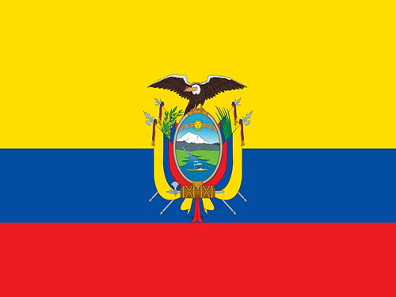
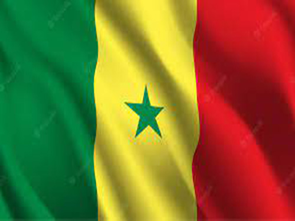
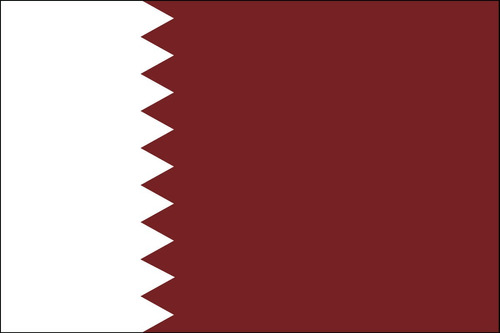
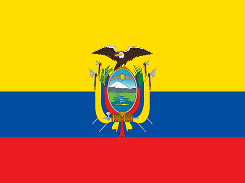
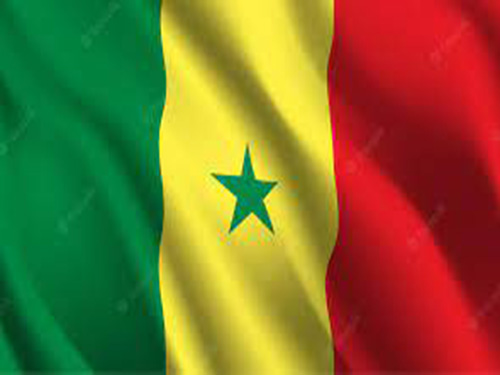
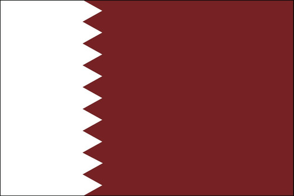

Qatar
O Qatar é um país peninsular árabe cuja paisagem abrange um deserto árido e um longo litoral no Golfo Pérsico (Árabe) repleto de praias e dunas. Também na costa, fica a capital Doha, conhecida pelos arranha-céus futuristas e pela arquitetura ultramoderna inspirada no antigo design islâmico, com exemplos como o Museu de Arte Islâmica, feito de calcário e localizado no calçadão à beira-mar da cidade, chamado de Corniche.